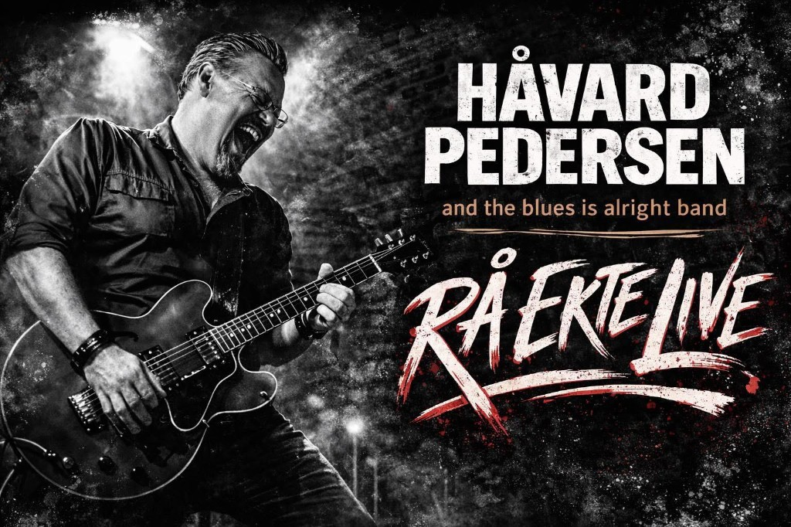
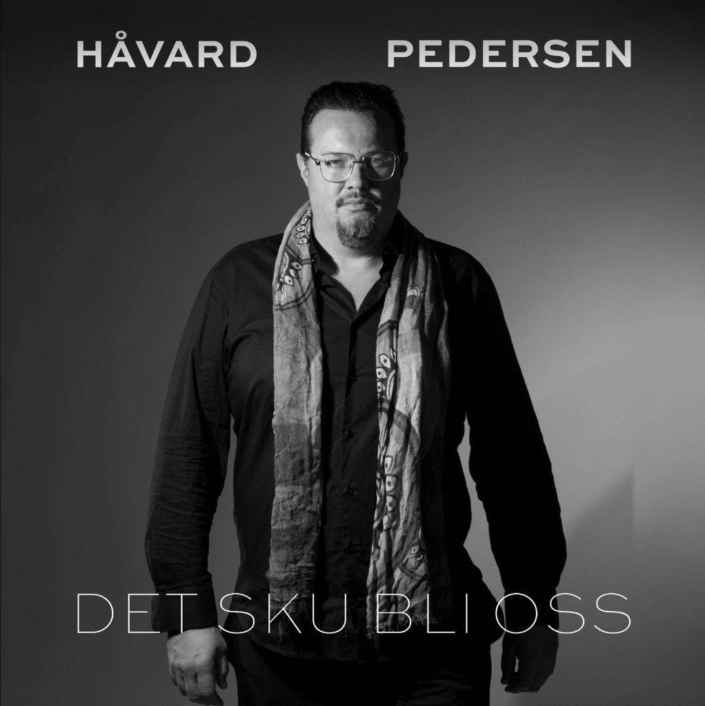

Recording · 2026
New album in progress
Recording at The Norwegian Sound in Mjøndalen with Peter Michelsen (Donkeyboy). Studio work continues toward the next full-length — summer single planned. Details land here and on social.
Featured · Produced · Endorsed
"I don't chase trends. I chase truth, tone, and the moment where the room goes quiet."
About
Norwegian guitarist, singer, and songwriter — Gretsch-endorsed, blues-rock bandleader, three albums and new sessions at The Norwegian Sound with Peter Michelsen (Donkeyboy).

From Vardø to Oslo: a live-first artist with three albums, a run of singles, and Håvard Pedersen & The Blues Is Alright Band — raw tone, real rooms, no playback.
From Vardø in Arctic Norway, Håvard Pedersen is a guitarist, singer, and songwriter shaped by blues and rock — John Norum is family, and artists from Gary Moore and SRV to Europe fed his early ears.
Three albums and a run of singles sit alongside session and stage work with guests such as Norum and Ronni Le Tekrø. New material is tracked with producer Peter Michelsen (Donkeyboy) at The Norwegian Sound, Mjøndalen. He is a Gretsch-endorsed artist.
On stage he leads Håvard Pedersen & The Blues Is Alright Band — an Oslo-based trio, no backing tracks, built for rooms that want guitar-led blues-rock straight from the source.
The through-line is always tone and truth: songs that admit wear, hope, and heat, carried by guitars that sing before they shred. Live, the band trades playback for pulse — tempo breathes, dynamics tell the story, and the room gets a show built for ears, not algorithms.
Pedersen’s playing sits in the lineage of blues-rock and melodic rock — from Gary Moore and Stevie Ray Vaughan to the British and Scandinavian classic-rock vocabulary — filtered through Arctic Norway and Oslo rooms where dynamics still matter. Family ties to John Norum are part of the story; on record, guests such as Norum and Ronni Le Tekrø connect that lineage directly to his own songs.
Håvard Pedersen is a Norwegian guitarist, singer, and songwriter whose work moves between blues-rock, melodic rock, and roots-leaning storytelling. Raised in Vardø in Arctic Norway and based in Oslo, he has released three albums and a steady run of singles, with guests such as John Norum and Ronni Le Tekrø, and new sessions alongside producer Peter Michelsen (Donkeyboy) at The Norwegian Sound in Mjøndalen.
He is a Gretsch-endorsed artist. On record, Pedersen balances grit and melody; on stage, he fronts Håvard Pedersen & The Blues Is Alright Band, a trio committed to live performance without backing tracks — built for clubs and festivals that still want guitar, voice, and groove in real time.
His catalogue moves between guitar-forward blues-rock and melodic storytelling — from debut-era radio and specialist reviews through recent singles produced with Peter Michelsen (Donkeyboy). Norwegian and UK outlets have covered sessions and releases; full transcripts and scans live on the legacy press pages linked from this site.
For hi-res photos, tech specs, and longer interview extracts, use the contact form or email. Live bookings for the trio are routed via Gigplanet for the fastest routing.
Updates
Studio and live updates. Archive: havardpedersen.com/news.
Recording · 2026
Recording at The Norwegian Sound in Mjøndalen with Peter Michelsen (Donkeyboy). Studio work continues toward the next full-length — summer single planned. Details land here and on social.
Live
Håvard Pedersen & The Blues Is Alright Band — Oslo-based, no tracks, ready for clubs and festivals. Gigplanet booking
Discography
Stream the catalogue, browse releases and tracklists — live footage in Video, stills in Photos. CDs: shop.

Debut album (Cinematicworld Records): blues, rockabilly, and melodic rock — including “Still In Love With You” with John Norum as a tribute to Gary Moore, plus guests such as Ronni Le Tekrø. Fourteen tracks; stream above or expand the full listing.
Second studio chapter: life, pressure, love, and resilience — more direct and vulnerable, with a richer guitar-and-vocal sound between blues and melodic rock.
Film
Performances and videos on YouTube @havardhedde10. Interviews: Press.
Blues is alright band — February 2025 (@havardhedde10)
Live clips — February 2025 (@havardhedde10)
Det sku bli oss — official Topic / streaming release
Stills
Live, studio, portraits, and artwork — tap an image for fullscreen.
Live & stage
Studio & portraits
Singles, poster & artwork
Live Project
Håvard Pedersen & The Blues Is Alright Band is Håvard’s live flagship: an Oslo-based blues-rock trio (with Tom Arne Fossheim on drums and Pål Salvesen on bass) built around Gretsch-driven tone, SRV and Gary Moore influences, and sets that stay honest — no backing tracks.
The same voice you hear on records from Never Felt So Good through Det sku bli oss and the forthcoming Mjøndalen sessions with Peter Michelsen — just louder, with the PA pushing air.
Line-up
Reach out
Email: havardpedersen@me.com — fans, press, and collaborators: use the form below or write directly. For live bookings, Gigplanet routes dates fastest for Håvard Pedersen & The Blues Is Alright Band.
Media
Selected coverage from the Never Felt So Good era. Full reviews, interviews, and scans: Reviews · Interviews · havardpedersen.com.
Specialist press in the UK and Europe reviewed Never Felt So Good alongside sustained Norwegian coverage — full excerpts and summaries are preserved on the legacy reviews archive.
National and regional Norwegian media documented the Alta sessions and debut rollout — NRK, Altaposten, TV Nord — with interviews and performance material consolidated on havardpedersen.com.
As heard & seen
UK and European outlets reviewed Never Felt So Good alongside Norwegian coverage — full texts and summaries are archived on the legacy press hub.
Reviews archiveRadio and television appearances include UK blues-rock programming and Norwegian regional and national outlets — interviews and scans are collected on havardpedersen.com.
Interviews archiveOn Stage
Håvard Pedersen & The Blues Is Alright Band — Oslo-based trio, originals and classics, no backing tracks. Footage in Video.
{kind=link}
{kind=link}
{kind=link}
{kind=link}
{kind=link}
{kind=link}
{kind=link}
{kind=link}
{kind=link}